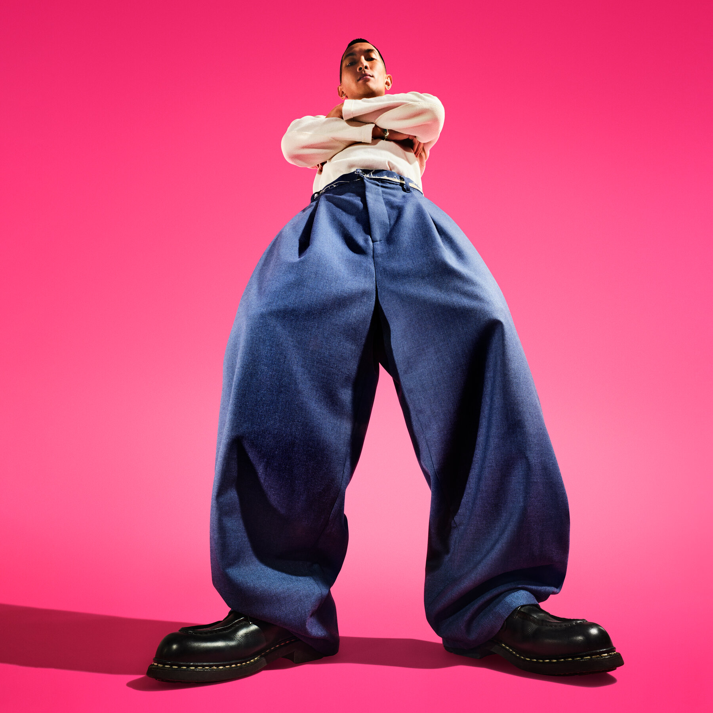
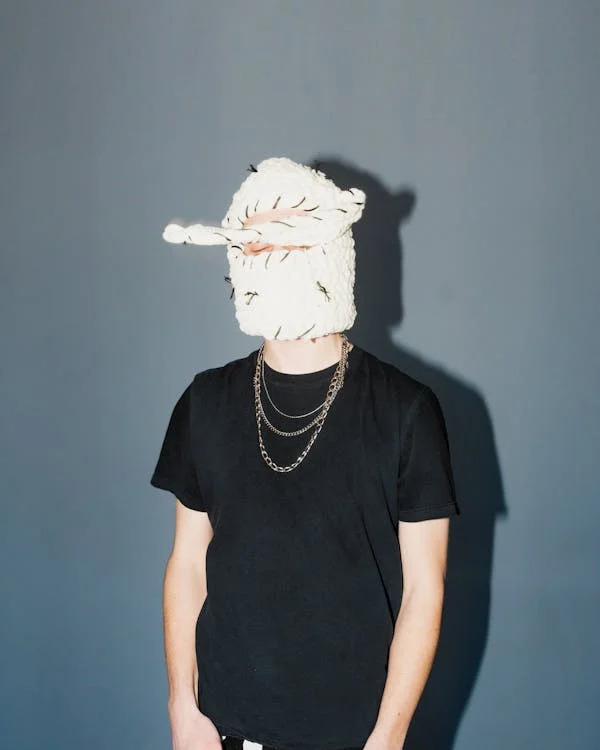
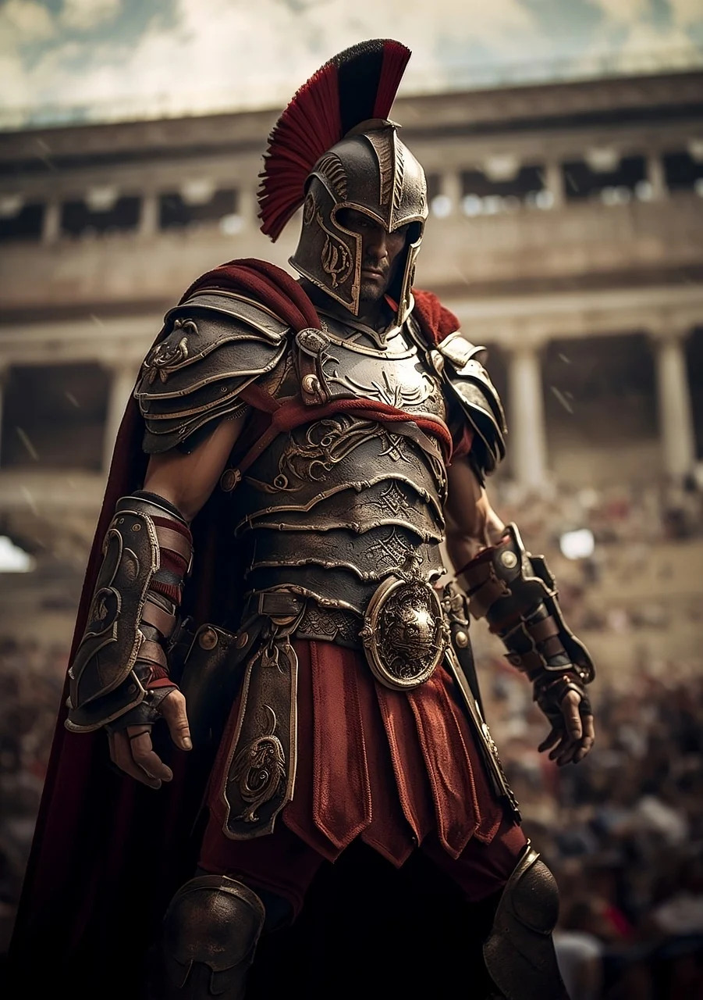
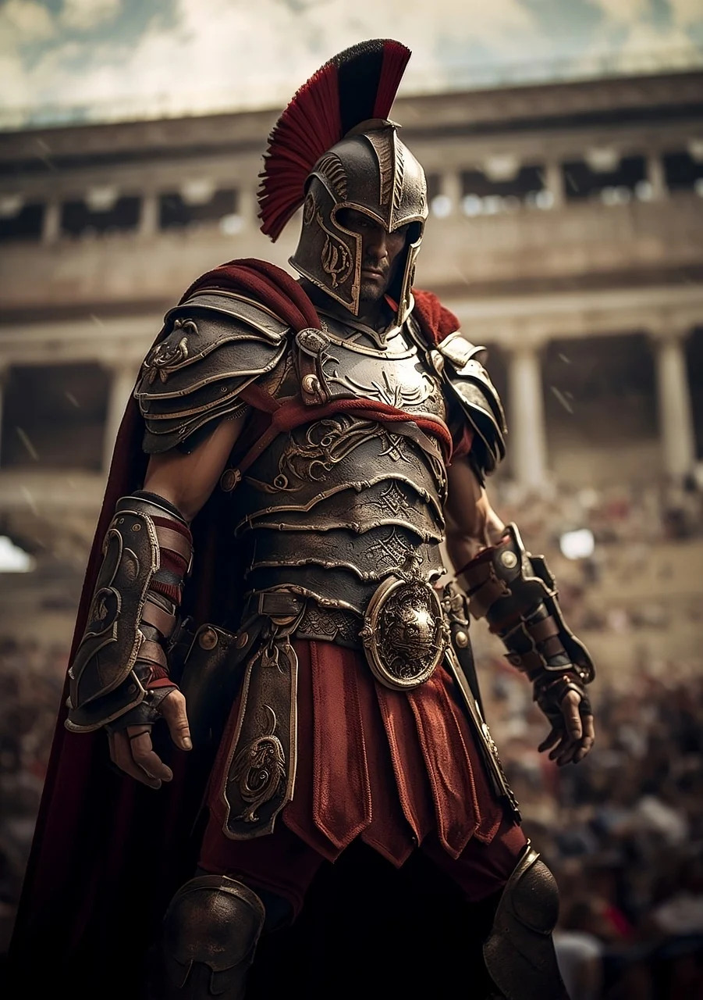

Big Pants Style from NY Times
Man in black shirt wearing a white headwear by Aidan Roof
Man wearing upside down sheep mask
.jpg) 
A painting of George Washington following the Battle of Princeton, circa 1777
Tis a Roman centurion, a Gladiator in the ages around 300 BC
A couple dressed from the 1920s, how roaring of them!
Home Screen:
"Waterfalls during Sunset" Sachin C Nair, pexels.com, Accessed 18 Oct 2024
Time Periods through fashion:
“George Washington at Princeton” Charles Willson Peale, Wikimedia, commons.wikimedia.org Accessed 17 Oct 2024
Time Periods through fashion:
“Roman Soldier Centurion” DGSstudios, pixabay, pixabay.com Accessed 17 Oct 2024
Time Periods through fashion:
“Couple Sitting Together in Black and White” Gera Cejas, pexels, pexels.com Accessed 17 Oct 2024
Ridiculous Fashion:
“Mag-pants” New York Times, NY Times, nytimes.com Accessed 17 Oct 2024
Ridiculous Fashion:
“Man in Black Shirt Wearing a White Headwear” Aidan Roof, pexels, pexels.com Accessed 17 Oct 2024
Ridiculous Fashion:
“Man Wearing Upside Down Sheep Mask” lil artsy, pexels, pexels.com Accessed 17 Oct 2024